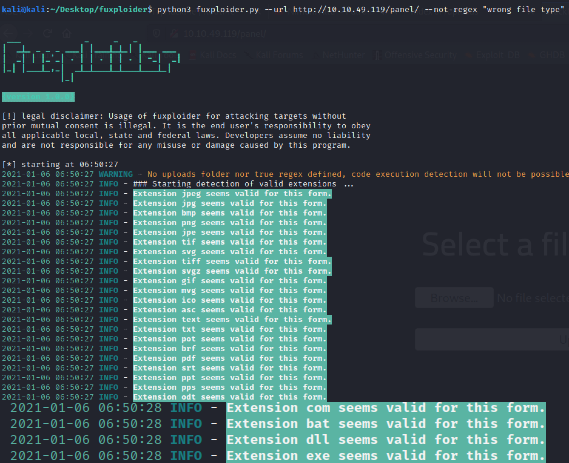

How to conduct a penetration testing
What is penetration testing?
Penetration testing (or pen testing) is a security exercise where a cyber-security expert attempts to find and exploit vulnerabilities in a computer system. The purpose of this simulated attack is to identify any weak spots in a system’s defenses which attackers could take advantage of.
Penetration testing stages

Black box pentesting
- Scanning and Reconnaissance
- Target: 10.10.49.119
- We used nmap to scan the given IP adress in order to search what ports are open and what services they are running.
- Gaining access
- We used gobuster to conduct a directory brute force. We found an enpoint (/panel) from where we can upload files and we can see them in /uploads.
- Exploiting vulnerabilities
- We used a tool called fuxploider in order to check what file extensions are allowed. We can see that there is no filter so we can upload a php reverse shell listener.

- Privilege escalation
- We used the find command to search all the files that have the SUID bit set. We found that Python have the SUID set, so we leverage this to our advantage to access files from the root directory.